Inicio
En esta experiencia que apenas inicia se puede decir que la educación actual contempla una nueva forma de llegar al aprendizaje, desde la propia perspectiva que estamos viviendo haciendo uso de los medios electrónicos que permiten la comunicación de los alumnos y profesores a grandes distancias y que fortalece los esfuerzos educativos, para que los maestros conduzcan a los alumnos hacia el aprendizaje en el que ellos participen a través del trabajo en equipo, la investigación, el intercambio de experiencias y opiniones que forman el marco contextual en el que los alumnos llegarán a construir conocimientos de calidad.
El desarrollo del proyecto deberá enmarcarse en la utilización de diferentes tecnologías que proporcionan información diversa: documentos, consulta con expertos, proyección de videos, búsquedas en internet, experiencias a través del correo electrónico y foros de discusión.
De los trabajos elaborados por los participantes.
- Deberán desarrollar cada una de las actividades de cada etapa fundamentando sus mensajes de acuerdo a fuentes consultadas.
- Sus aportaciones finales deberán ser creaciones de los alumnos y enviarse dentro del tiempo programado para esa etapa.
Inicio
En esta experiencia que apenas inicia se puede decir que la educación actual contempla una nueva forma de llegar al aprendizaje, desde la propia perspectiva que estamos viviendo haciendo uso de los medios electrónicos que permiten la comunicación de los alumnos y profesores a grandes distancias y que fortalece los esfuerzos educativos, para que los maestros conduzcan a los alumnos hacia el aprendizaje en el que ellos participen a través del trabajo en equipo, la investigación, el intercambio de experiencias y opiniones que forman el marco contextual en el que los alumnos llegarán a construir conocimientos de calidad.
El desarrollo del proyecto deberá enmarcarse en la utilización de diferentes tecnologías que proporcionan información diversa: documentos, consulta con expertos, proyecciones de videos, búsqueda en internet, experiencias a través del correo electrónico y foros de discusión.
De los trabajos elaborados por los participantes.
- Deberán desarrollar cada una de las actividades de cada etapa fundamentando sus mensajes de acuerdo a fuentes consultadas.
- Sus aportaciones finales deberán ser creaciones de los alumnos y enviarse dentro del tiempo programado para esa etapa.
Presentación
El proyecto educativo "Los Animales", está dirigido a los niños de educación preescolar para apoyar a las educadoras y educadores con actividades que proponen el uso de la tecnología en el aula, sus acciones están encaminadas a desarrollar el tema los animales en forma significativa, tomando en cuenta los principios de respeto a las necesidades e intereses de los niños, su capacidad de expresión y juego, anotados en el programa de educación preescolar.
Este proyecto busca favorecer el proceso de socialización del niño, su relación con la naturaleza, ayuda a ejercitar su psicomotricidad, favorece nociones matemáticas, el lenguaje oral, escrito y la escritura al intercambiar experiencias a través de dibujos y audio, colaborando de esta manera con el propósito de elevar la calidad de la educación.
Este proyecto está organizado en cuatro etapas de interacción que ofrecen a los participantes del jardín de niños la práctica de una vida social inspirada en la relación del niño con su medio natural y social, favoreciendo sus dimensiones afectiva, social, intelectual y física.
En el calendario se encuentra la duración y actividades a seguir.
Para iniciar la participación en el proyecto Los Animales es necesario inscribir al grupo llenando la ficha de inscripción.
Antes de inscribirse es importante que las educadoras y educadores, realicen las actividades propuestas en la etapa previa del calendario de actividades del proyecto y conozcan la estrategia de operación y sus características generales.
La educadora y el educador motivarán a los alumnos tomando en cuenta aspectos metodológicos fundamentales como: Momentos de búsqueda, reflexión y experimentación de los niños; la intervención del docente durante el desarrollo de las actividades y la relación con los bloques de actividades con el proyecto.
Para cada etapa según corresponda y a criterio del docente se organizará al grupo por equipos, en forma individual al elaborar dibujos libres y moldeado en plastilina, o grupal al realizar los periódicos murales. El educador decidirá la forma de trabajo a realizar de acuerdo a las necesidades del grupo. Aunque el tiempo de cada etapa está marcado en el calendario de actividades, es importante hacer notar que los niños determinarán el tiempo real de acuerdo a su interés.
En cada etapa se abrirá un foro para que las educadoras y los educadores intercambien experiencias adquiridas durante el desarrollo del proyecto.
Los productos finales serán escogidos y escaneados por los niños y educadores para publicarlos en el periódico mural y/o en la red social de su preferencia.
Las herramientas que se utilizarán para el desarrollo de este proyecto serán Internet, libros del rincón, computadoras.
La evaluación será permanente de acuerdo a las actividades de las etapas programadas, las educadoras y los educadores se harán responsables de motivar a los participantes apoyándolos en las actividades propuestas y deberán estar siempre en contacto con su coordinador para salir de dudas o hacer comentarios.
Actividades
Durante el desarrollo del proyecto el alumno realizará una gama de actividades que lo llevarán a lograr los propósitos antes mencionados.
A continuación algunas actividades a realizar durante el proyecto:
- La transmisión de los videos “El monstruo de la basura”, "Una aventura para salvar el planeta" y “ ¿Por qué el reciclaje es tan importante?”.
- Separar basura en el centro educativo.
- Visitar un centro de acopio de materiales para reciclar.
- Elaborar un papel reciclado.
- Realizar búsquedas en Internet que le servirán para formarse una idea general acerca de la basura.
- Elaborar un cuento relacionado con el tema del proyecto.
- Publicar evidencias de las actividades en un blog...
Ubicación curricular
PREESCOLAR SEGUNDO Y TERCER GRADO
Competencia que se favorece
Observa características relevantes de elementos del medio y de fenómenos que ocurren en la naturaleza, distingue semejanzas y diferencias y las describe con sus propias palabras
Aprendizajes esperados
- Describe características de los seres vivos (partes que conforman una planta o un animal) y el color, tamaño, textura y consistencia de elementos no vivos.
- Clasifica elementos y seres de la naturaleza según sus características, como animales, según el número de patas, seres vivos que habitan en el mar o en la tierra, animales que se arrastran, vegetales comestibles y plantas de ornato, entre otros.
Competencia que se favorece
Competencia que se favorece: Busca soluciones y respuestas a problemas y preguntas acerca del mundo natural
Aprendizaje esperado
Quinto grado
- Explica los cambios que ocurren durante/después de procesos de indagación: cómo cambia un animal desde que nace; cómo el agua se hace vapor o hielo; cómo se transforman alimentos por la cocción o al ser mezclados, y cómo se tiñen o destiñen la tela y el papel, entre otros, empleando información que ha recopilado de diversas fuentes.
Calendario
 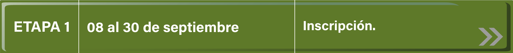
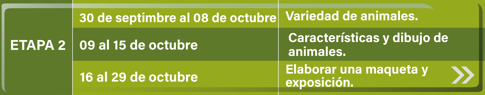
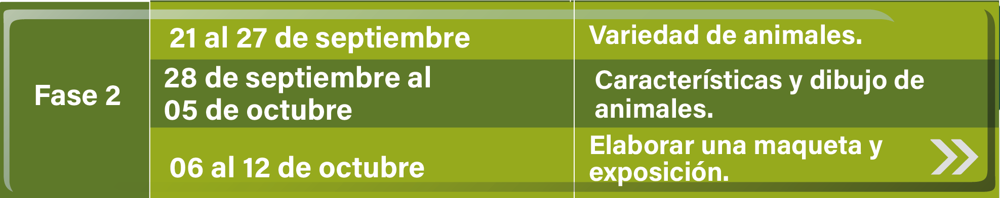
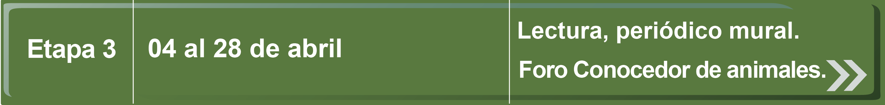
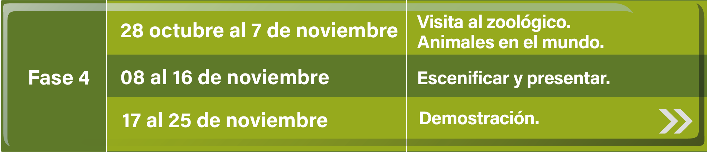
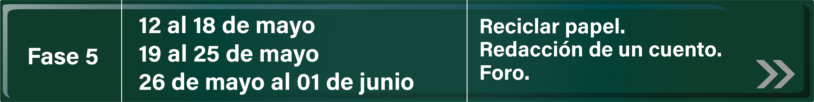
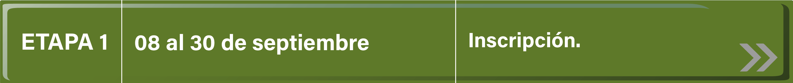
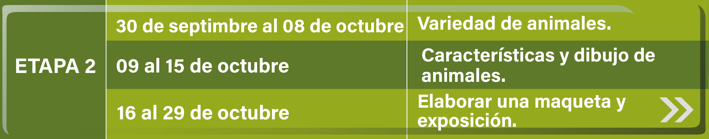
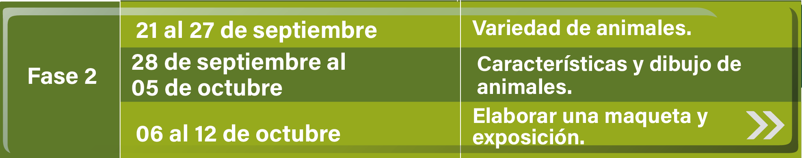
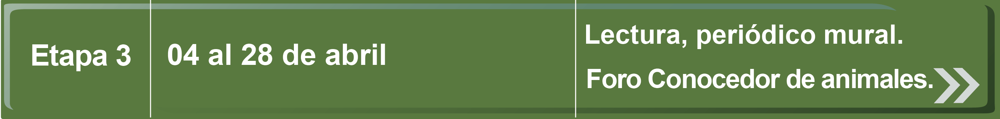
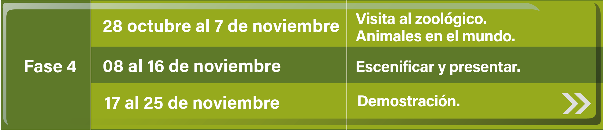
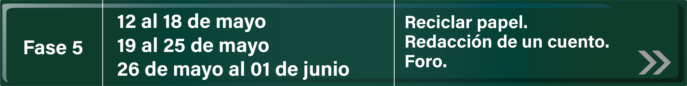
Etapa Previa Del 15 de febrero al 1 de marzo
- El educador revisa el contenido de todo el proyecto.
- Presencia de una mascota en el salón de clases.
- Motivar diálogo sobre las características y cuidados de la mascota.
- Comentar sobre las mascotas personales.
- Elaborar un friso donde cada niño dibuja vivencias con su mascota, conservarlo para utilizarlo en la etapa 3.
- Escuchar un cuento. (Lo lee la educadora “Alrededor de la Granja”) (texto y audio)
- Proyectar el video Los animales para niños (animales salvajes, animales de granja y animales acuáticos)
- Dialogar con los niños acerca de la existencia de fuentes de información como: Internet, Biblioteca, videos y proyectos educativos como el de Red escolar.
- Invitar a los niños a investigar más sobre los animales y a inscribirse en el proyecto "LOS ANIMALES " que ofrece Red Escolar en Preescolar Sinaloa.
Etapa 1 Inscripción Del 2 al 8 de marzo
Llenar el formato de inscripción al proyecto "LOS ANIMALES"
De igual manera será la forma de distribución de los alumnos para el desarrollo de las actividades. Se aconseja la organización por equipos.
Etapa 2 Variedad de Animales Del 9 al 15 de marzo
Ver el video El sonido de los animales:
Retomar los coros y sonidos de animales apoyados por el maestro de educación física quien los guiará a realizar imitaciones de movimientos característicos de ciertos animales.
De acuerdo a la investigación hecha por los niños nace el interés de realizar otras actividades para conocer la diversidad de animales.
Escuchar ¿qué es?
Del 16 al 24 de marzo
Observar un video cuya temática esté relacionada con los animales y comentarlo en grupo. Se sugieren éstos:
En ingles:
Elaborar en forma individual dibujo libre o modelado en plastilina de acuerdo a su interés.
21 de marzo al 1 de abril
- Recolectar material para elaborar una maqueta y montar una exposición.
- Montar una exposición de la maqueta, los trabajos individuales (en forma libre), realizar una clasificación agrupando los animales de acuerdo a sus características (Tamaño y color, granja, selva, acuáticos).
- Participación del maestro en foro Variedad de animales.
Etapa 3 Conocer los animales Del 2 al 8 de abril
- En el rincón de libros del salón, el niño elige un libro de animales para que la maestra realice una lectura en voz alta.
- La educadora aplica las estrategias de lectura que se manejan en el nivel preescolar.
- Elaborar en grupo un periódico mural de acuerdo a lo que investigó en el rincón del libro. Se puede incluir el friso que se realizó en la etapa previa
- Invitar a la comunidad escolar a observar el periódico elaborado, responder a las preguntas y comentarios que surjan.
- Intercambio de dibujos a través del foro CONOCER LOS ANIMALES .
Etapa 4 Un viaje al zoologico Del 25 al 29 de abril
- Navegar por Internet y consultar la páginaEl Zoológico Electrónico
- Visitar elZoológico de Chapultepec Interactivo y elaborar dibujo libre.
- Visitar elZoológico de Guadalajara recorridos virtuales y elaborar dibujo libre.
- Organizar y realizar una visita guiada al zoológico para tener acercamiento con diversos animales y distinguir los animales característicos de la región.
- Conocer animales que viven en otras partes del mundo.
Del 2 al 13 de mayo
Del 14 al 20 de mayo
Actividades
Dar clic en la imagen para descargar el archivo

Foros
Foro I (Del 15 al 1 de marzo)
¿Qué significado tiene para ustedes la palabra basura?
Favor de ingresar al sigueinte enlace:
Foro II (Del 16 al 22 de marzo)
Comentarios de videos sobre la basura
Favor de ingresar al sigueinte enlace:
Foro III (Del 30 de marzo al 26 de abril)
¿Que importancia tiene la separación de basura?
Favor de ingresar al sigueinte enlace:
Foro IV (Del 4 al 11 de mayo)
Problemas localizados en la comunidad y soluciones que pueden aplicarse
Favor de ingresar al sigueinte enlace:
Foro V (Del 26 de mayo al 1 de junio)
Cuentos, Rimas y Canciones
Favor de ingresar al sigueinte enlace:
Blogs

El profesor de grupo o el responsable tecnológico escolar construye un blog para llevar el seguimiento del proyecto.
El siguiente video presenta un tutorial para quienes no están familiarizados con el desarrollo de un blog:
Una vez creado el blog deberá compartir el enlace en el foro.
Ejemplo: "Somos los recicladores...nuestro blog es: http://recicladores.blogger.com"
El blog deberá contener imágenes y evidencias que den cuenta del trabajo que los integrantes están realizando.
Para el período de la etapa final del proyecto y en este mismo espacio podremos conocer los blogs que desarrollaron todos los participantes.
Bienvenido

Conociendo la Basura
Proyectos colaborativos
¡Atrévete a guiar a tus alumnos en esta nueva aventura!
Aprenderán sobre:

La procedencia y el destino de los desechos

El ambiente y su protección
La basura orgánica e inorgánica